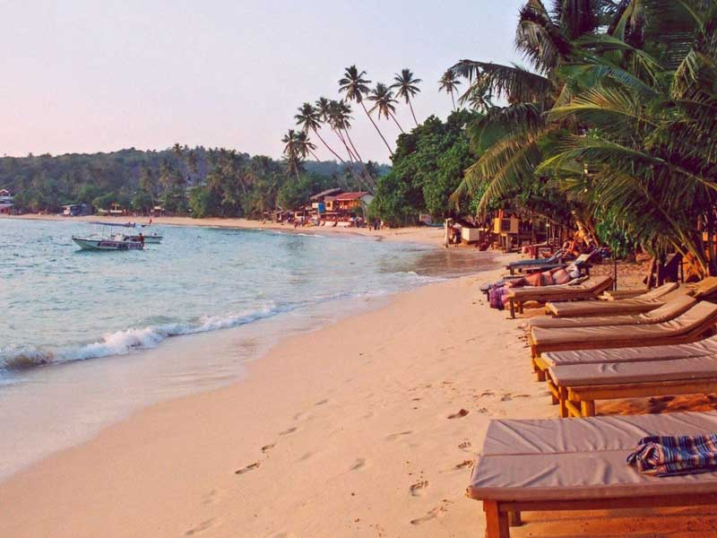
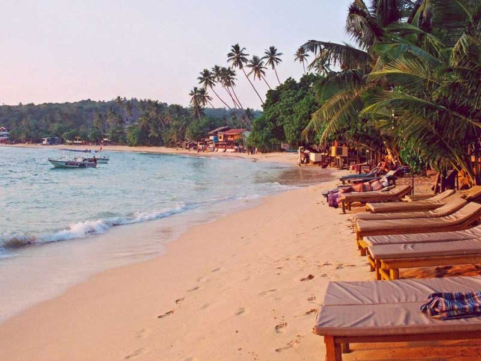
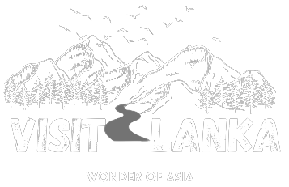

Hikkadawa Beach
Read More
|
Hikkaduwa BeachEtymologyThe name Hikkaduwa is thought to have been derived from the two words Sip Kaduwa, with Sip (සිප්) being the shorter version of Shilpaya which refers to knowledge in Sinhalese and Kaduwa(කඩුව) which means sword. It is believed therefore that the name Hikkaduwa means sword of knowledge. Alternatively it means coral or seashell jungle.TransportHikkaduwa is located on the Coastal or Southern Rail Line (connecting Colombo through to Matara). It is also located on the A2 highway, connecting Colombo to Wellawaya, which runs mostly parallel to the shore, through the town.EconomyHikkaduwa's economy was traditionally based on fishing and coconut cultivation. This was replaced by tourism when its golden sandy beaches were discovered. It is a well-known international destination for board-surfing. The town was featured in an episode of Anthony Bourdain's television show No Reservations.[citation needed]Hikkaduwa was affected by the tsunami caused by the 2004 Indian Ocean earthquake along with nearby villages Telwatta, Paraliya (site of the Queen of the Sea rail disaster), Dodanduwa, Kahawa and Rathgama. In the aftermath of the tsunami, many of the families who had lost everything were given sewing machines as part of the relief operations. As a result, the town has a multitude of tailors who will custom make shirts, trousers, and shorts. [citation needed] Attractions |
|
||


 



|
|||

|
|||